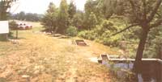

CLOCKWISE FROM TOP: A view from above the top collection pond at MOTHER's fish farm. The fingerling tank is the rectangular one.... A grader box fitted with dowels spaced a particular distance apart is used to separate the fish by their size.... A young visitor to the Eco-Village reaps the rewards of the catch-out pond at the bottom of our fish farm.... This Kamloops has lived at Eco- Village for only a few weeks, and will require almost a year's worth of feeding before it's ready for the market.